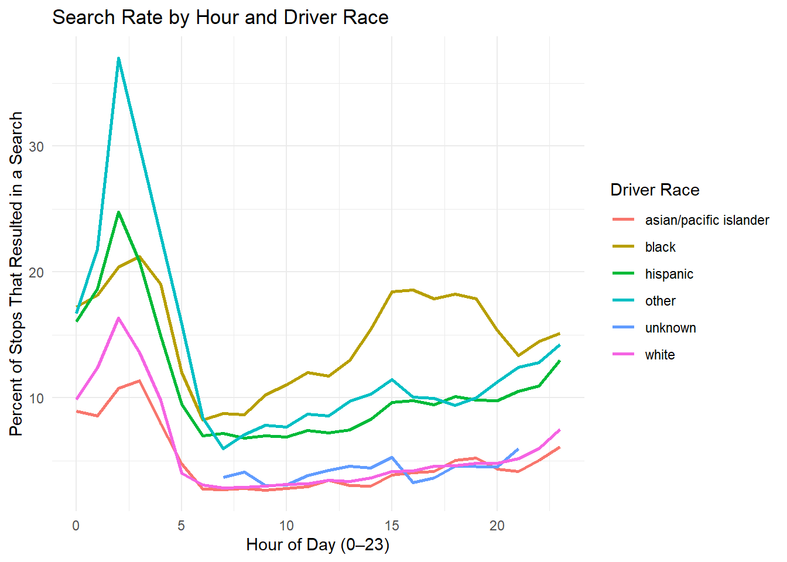

con_traffic <- DBI::dbConnect(
RMariaDB::MariaDB(),
dbname = "traffic",
host = Sys.getenv("TRAFFIC_HOST"),
user = Sys.getenv("TRAFFIC_USER"),
password = Sys.getenv("TRAFFIC_PWD")
)Traffic Stops
Analysis of traffic stops in various U.S. locations
Traffic stop data offer important insights into how policing practices vary across time and demographic groups. In this project, I investigate whether search behavior varies by time of day and driver race across three distinct jurisdictions in the Stanford Open Policing Project database: Arizona Statewide, Oakland (CA), and Saint Paul (MN).
To address this question, I will attempt to combine three separate SQL tables into a unified dataset. I will then try to visualize the resulting search patterns to explore whether certain racial groups experience higher search rates during specific hours of the day.
The following table combines the data from all three tables into one, big table. It groups the data by the hour of the day and by the race of the driver. It also gives the number of stops, number of searches, and percentage of stops that were searches for each of these groups.
SELECT
hour,
subject_race,
n_stops,
n_searched,
ROUND(100.0 * n_searched / n_stops, 2) AS pct_searched
FROM (
SELECT
CONVERT(TIME_FORMAT(time, '%H'), UNSIGNED) AS hour,
subject_race,
COUNT(*) AS n_stops,
SUM(search_conducted) AS n_searched
FROM (
SELECT time, subject_race, search_conducted
FROM az_statewide_2020_04_01
UNION ALL
SELECT time, subject_race, search_conducted
FROM ca_oakland_2020_04_01
UNION ALL
SELECT time, subject_race, search_conducted
FROM mn_saint_paul_2020_04_01
) AS combined
WHERE subject_race IS NOT NULL
AND TIME_FORMAT(time, '%H') IS NOT NULL
GROUP BY hour, subject_race
HAVING COUNT(*) > 1000
) AS hourly
ORDER BY hour, subject_racehourly hour subject_race n_stops n_searched pct_searched
1 0 asian/pacific islander 6385 570 8.93
2 0 black 27994 4821 17.22
3 0 hispanic 16906 2715 16.06
4 0 other 2317 387 16.70
5 0 white 41049 4055 9.88
6 1 asian/pacific islander 4250 364 8.56
7 1 black 19170 3481 18.16
8 1 hispanic 14072 2628 18.68
9 1 other 1444 315 21.81
10 1 white 28649 3551 12.39
11 2 asian/pacific islander 2571 276 10.74
12 2 black 13260 2701 20.37
13 2 hispanic 11386 2818 24.75
14 2 other 1051 389 37.01
15 2 white 19285 3152 16.34
16 3 asian/pacific islander 1719 195 11.34
17 3 black 7927 1684 21.24
18 3 hispanic 7866 1635 20.79
19 3 white 12840 1745 13.59
20 4 asian/pacific islander 1217 97 7.97
21 4 black 5032 958 19.04
22 4 hispanic 6912 1034 14.96
23 4 white 11533 1133 9.82
24 5 asian/pacific islander 1601 76 4.75
25 5 black 6159 741 12.03
26 5 hispanic 16769 1590 9.48
27 5 other 1432 227 15.85
28 5 white 33432 1334 3.99
29 6 asian/pacific islander 2758 76 2.76
30 6 black 10886 898 8.25
31 6 hispanic 38226 2667 6.98
32 6 other 4194 352 8.39
33 6 white 74716 2308 3.09
34 7 asian/pacific islander 5521 150 2.72
35 7 black 17555 1532 8.73
36 7 hispanic 56336 4036 7.16
37 7 other 7859 468 5.95
38 7 unknown 1357 50 3.68
39 7 white 124248 3529 2.84
40 8 asian/pacific islander 7507 211 2.81
41 8 black 21580 1869 8.66
42 8 hispanic 63703 4323 6.79
43 8 other 9617 680 7.07
44 8 unknown 1543 63 4.08
45 8 white 143734 4124 2.87
46 9 asian/pacific islander 7536 202 2.68
47 9 black 19891 2039 10.25
48 9 hispanic 59863 4185 6.99
49 9 other 9860 773 7.84
50 9 unknown 1380 42 3.04
51 9 white 133696 3973 2.97
52 10 asian/pacific islander 7779 218 2.80
53 10 black 20147 2227 11.05
54 10 hispanic 57611 3976 6.90
55 10 other 10284 791 7.69
56 10 unknown 1291 40 3.10
57 10 white 132448 4128 3.12
58 11 asian/pacific islander 6721 196 2.92
59 11 black 16963 2037 12.01
60 11 hispanic 47224 3504 7.42
61 11 other 8931 779 8.72
62 11 unknown 1102 42 3.81
63 11 white 113014 3605 3.19
64 12 asian/pacific islander 6676 229 3.43
65 12 black 18316 2149 11.73
66 12 hispanic 52933 3823 7.22
67 12 other 9751 835 8.56
68 12 unknown 1273 54 4.24
69 12 white 126468 4341 3.43
70 13 asian/pacific islander 7365 223 3.03
71 13 black 21147 2747 12.99
72 13 hispanic 62155 4626 7.44
73 13 other 11926 1159 9.72
74 13 unknown 1531 70 4.57
75 13 white 143444 4816 3.36
76 14 asian/pacific islander 7897 236 2.99
77 14 black 23185 3582 15.45
78 14 hispanic 70806 5859 8.27
79 14 other 12548 1289 10.27
80 14 unknown 1608 71 4.42
81 14 white 156751 5690 3.63
82 15 asian/pacific islander 7194 279 3.88
83 15 black 22490 4147 18.44
84 15 hispanic 66816 6449 9.65
85 15 other 12741 1461 11.47
86 15 unknown 1536 81 5.27
87 15 white 145329 6001 4.13
88 16 asian/pacific islander 7582 306 4.04
89 16 black 24024 4463 18.58
90 16 hispanic 63707 6231 9.78
91 16 other 12567 1265 10.07
92 16 unknown 1537 50 3.25
93 16 white 142870 5966 4.18
94 17 asian/pacific islander 9036 373 4.13
95 17 black 28181 5031 17.85
96 17 hispanic 59820 5641 9.43
97 17 other 12855 1282 9.97
98 17 unknown 1398 51 3.65
99 17 white 142083 6480 4.56
100 18 asian/pacific islander 7790 393 5.04
101 18 black 25261 4611 18.25
102 18 hispanic 49482 4996 10.10
103 18 other 10163 955 9.40
104 18 unknown 1116 51 4.57
105 18 white 119589 5530 4.62
106 19 asian/pacific islander 7051 369 5.23
107 19 black 23903 4271 17.87
108 19 hispanic 41610 4078 9.80
109 19 other 9049 908 10.03
110 19 white 99311 4762 4.80
111 20 asian/pacific islander 7355 318 4.32
112 20 black 24939 3836 15.38
113 20 hispanic 44177 4327 9.79
114 20 other 8755 988 11.28
115 20 unknown 1037 47 4.53
116 20 white 105488 5080 4.82
117 21 asian/pacific islander 7882 329 4.17
118 21 black 26847 3585 13.35
119 21 hispanic 46507 4884 10.50
120 21 other 8366 1040 12.43
121 21 unknown 1092 65 5.95
122 21 white 108378 5614 5.18
123 22 asian/pacific islander 7797 392 5.03
124 22 black 29762 4305 14.46
125 22 hispanic 40249 4404 10.94
126 22 other 6240 798 12.79
127 22 white 91427 5469 5.98
128 23 asian/pacific islander 8575 521 6.08
129 23 black 35773 5410 15.12
130 23 hispanic 30325 3941 13.00
131 23 other 4029 573 14.22
132 23 white 70334 5283 7.51The following plot shows clear differences in stop frequency across hours of the day. Traffic stops increase substantially during daylight hours and decline late at night. Racial groups follow broadly similar patterns, though some groups appear to have disproportionately more stops during certain hours.
library(tidyverse)
ggplot(hourly, aes(x = hour, y = n_stops, color = subject_race)) +
geom_line(size = 1) +
labs(
title = "Number of Traffic Stops by Hour and Race",
x = "Hour of Day (0–23)",
y = "Number of Stops",
color = "Driver Race"
) +
theme_minimal()
The following figure illustrates how search likelihood varies across the day and across racial groups. Certain groups show consistently higher search rates than others, even during hours where the number of stops is low.
ggplot(hourly, aes(x = hour, y = pct_searched, color = subject_race)) +
geom_line(size = 1) +
labs(
title = "Search Rate by Hour and Driver Race",
x = "Hour of Day (0–23)",
y = "Percent of Stops That Resulted in a Search",
color = "Driver Race"
) +
theme_minimal()
This analysis reveals that both stop frequency and search rates vary substantially across time of day and across racial groups. Stops are most common in daytime and early evening hours, but search rates do not always follow this pattern. Instead, some racial groups experience higher search rates consistently throughout the day.
References: - Pierson, E., Simoiu, C., Overgoor, J., Corbett-Davies, S., Ramachandran, V., Phillips, C., Shroff, R., & Goel, S. (2020). A large-scale analysis of racial disparities in police stops across the United States. Nature Human Behaviour. https://www.nature.com/articles/s41562-020-0858-1
- Stanford Open Policing Project. (n.d.). Data portal. https://openpolicing.stanford.edu/data/